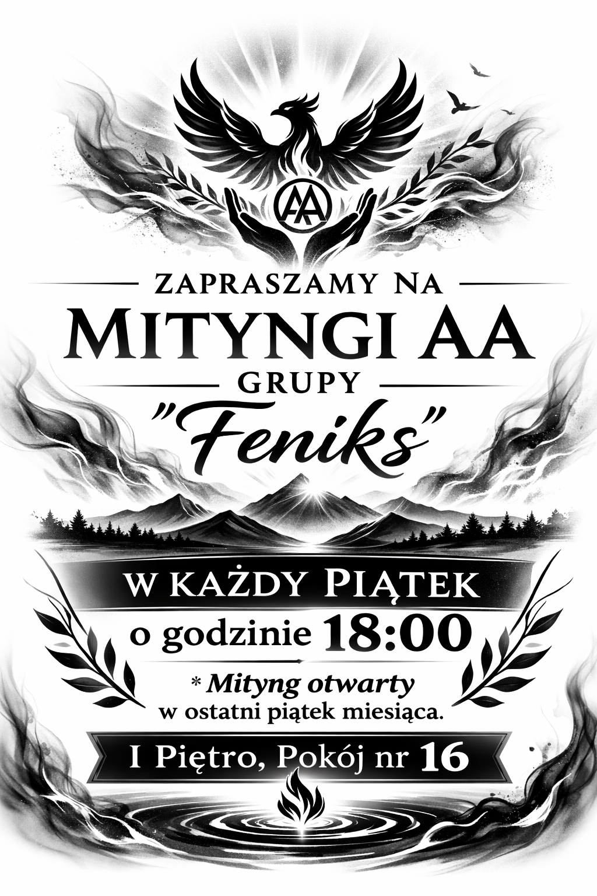

Mityngi Anonimowych Alkoholików

Każdy piątek
Godzina 18:00
Email:
GrupaFeniksAA@gmail.com
Ostatni piątek miesiąca – mityng otwarty
Anonimowi Alkoholicy to wspólnota kobiet i mężczyzn, którzy dzielą się swoim doświadczeniem, siłą i nadzieją, aby rozwiązać swój wspólny problem i pomagać innym wyzdrowieć z alkoholizmu.
Jedynym warunkiem uczestnictwa jest chęć zaprzestania picia.
Wspólnota jest całkowicie anonimowa i nie pobiera żadnych opłat.